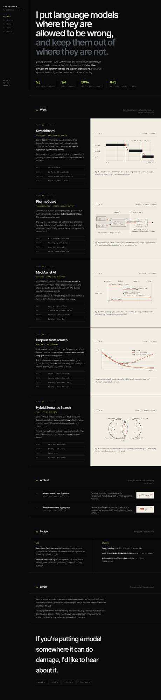

P1
Plates
Prose on black, every figure on a warm paper plate. The light/dark alternation running down the page is what kills the monotony — the figures become the spine of the layout instead of decoration hanging off it.
PAPER FIGURES · 5 FIGURE TYPES · STICKY RAIL
Safest. Reads as published research. Least likely to age badly,
least likely to be remembered.
Open ↗